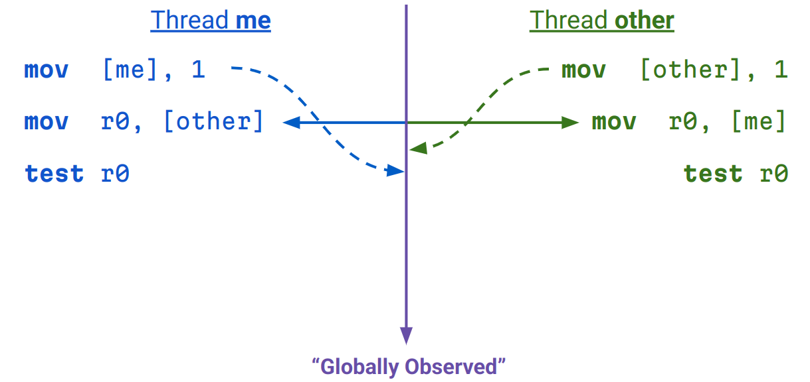
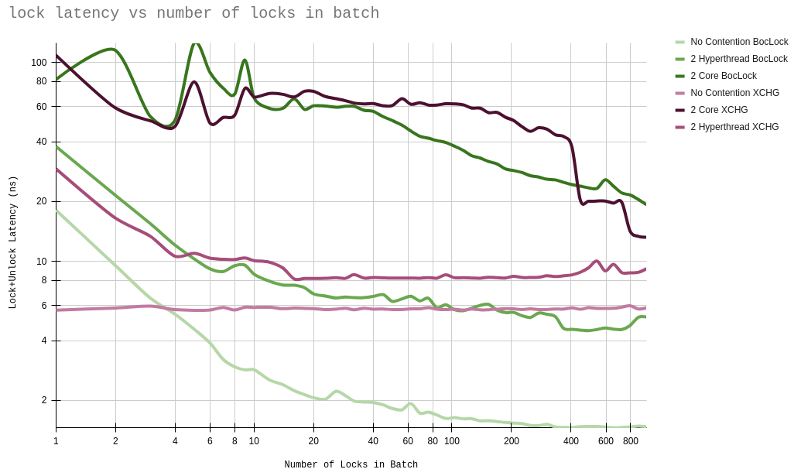

Faster Locks than XCHG on x86
October 16, 2025
Batching Locks
I am increasingly frustrated by CPUs not doing what I want them to. I want them to be streaming and I want them to give me deep control over their functional units and scheduling and caches. But they're not. The job of a CPU optimizer feels like it's counterintuitive. The CPU designers try and make a processor that guesses what you want to do, based on the instructions you gave it, and ends up doing something quite non-obvious. And then you are trying to guess what the CPU is doing... so you're guessing what the CPU is guessing what you're trying to do. Hell. I like the GPU philosophy more and I intend to leave the world of CPUs behind after I finish my current projects.
One thing that makes me upset is clflushopt, another is clwb. And a
third thing that makes me upset is mfence, and for that matter, any
instruction that functions as an mfence (such as xchg). xchg is
really slow and I don't want to use it for my locks. It takes like
25-50 cycles to finish and serializes with the other instructions so
nothing can even do anything while it's executing. What that means, if
you don't know, is if I have this super useful bunch of work:
asm!(
// instruction
"nop","nop","nop","nop","nop","nop","nop","nop","nop","nop",
"nop","nop","nop","nop","nop","nop","nop","nop","nop","nop",
"nop","nop","nop","nop","nop","nop","nop","nop","nop","nop",
"nop","nop","nop","nop","nop","nop","nop","nop","nop","nop",
"nop","nop","nop","nop","nop","nop","nop","nop","nop","nop",
"nop","nop","nop","nop","nop","nop","nop","nop","nop","nop",
"nop","nop","nop","nop","nop","nop","nop","nop","nop","nop",
"nop","nop","nop","nop","nop","nop","nop","nop","nop","nop",
"nop","nop","nop","nop","nop","nop","nop","nop","nop","nop",
"nop","nop","nop","nop","nop","nop","nop","nop","nop","nop",
"nop","nop","nop","nop","nop","nop","nop","nop","nop","nop",
"nop","nop","nop","nop","nop","nop","nop","nop","nop","nop",
// that was 100 nops
options(nomem, nostack, preserves_flags)
);
...and I want to put something where it says instruction, I can
normally expect that something that takes a while will happen, and while
it's happening, we can do the useful work after instruction at the
same time, because that's the magic of CPUs. Sof if instruction is
something like an idiv (which takes 50 cycles ish), we see that the
time that block takes increases by 4-5 cycles (which is not 50). If I
put a flippin xchg, it increases by 25-30 cycles (which is arse).
And sometimes, you just want to lock something to do like one or two
operations, that probably won't conflict anyway, so WHY AM I SOMETIMES
30x-ing my overhead for basically NOTHING. Why am I GETTING THIS
PERFORMANCE when there's NOT EVEN ANY CONTENTION. whew.
The reason for this is because the CPU does this flush of the store buffer, of course. I'll assume you know this already and explain my solution.
The Dekker Lock
A Dekker lock is a lock that lets you have mutual exclusion between
two threads with just MOVs. I didn't invent it (first). It works
by having two flags a and b and each flag can only be written to
by one of the two threads. To lock you do something like this
// thread &aposa&apos is acquiring
loop:
a := 1
if b == 1:
a := 0
else:
break;
// lock acquired
You can think of a set to 1 meaning "I want this lock". You can work
through this yourself to prove the sequentially consistent version
works. Using this with x86's memory model (TSO) will yield a pretty
correct lock. This is nice because MOVs are not stupid instructions
that cannot be pipelined properly.
...But it is a lock that is wrong. Here's why:

As you can see, both threads can acquire the lock because of TSO being annoying.
The Fixed Dekker Lock
We can fix this by acquiring like 10 locks, then doing the mfence.
You could also probably fix this by just doing the acquire, then
doing 30 cycles worth of work while you wait for the store buffer to
drain, then go back to it. But that's not 'semantically correct' and
all the formalising people will be mad at you. You can then extend this
design to allow up to 16 threads.
Some Points:
We use str8, ldr128 etc. for when we are actually dealing with the lock word. This is so that we can reason about correctness. These operations are atomic These operations respect TSO
Otherwise, we use the intrinsics, since the compiler can reason about them for optimizations.
typedef struct {
char bytes[16];
} mb_lock16_t __attribute__((aligned(16)));
#define RELEASED 0
#define ACQUIRED 0xff
static inline void mb_lock16_init(mb_lock16_t *lock)
{
memset((void *)&lock->bytes, RELEASED, sizeof(mb_lock16_t));
}
static inline void mb_lock16_will_acquire(mb_lock16_t *lock, size_t id)
{
__m128i lockv = ldr128((__m128i *)lock);
if (!_mm_testz_si128(lockv, lockv)) return;
str8(&lock->bytes[id], ACQUIRED);
}
static inline void mb_lock16_fence() { mfence(); }
static inline bool mb_lock16_try_acquire(mb_lock16_t *lock, size_t id)
{
__m128i lockv = ldr128((__m128i *)lock);
// treating each byte as a bit 0xff/0x00, we know that the movemask for
// an acquired lock is all 0s except 1 for our ID
uint16_t movm = (uint16_t)_mm_movemask_epi8(lockv);
uint16_t acqm = 1u << id;
if (movm == acqm) {
// we acquired
return true;
} else if ((movm & acqm) != 0) {
// we need to reset our flag
str8(&lock->bytes[id], RELEASED);
}
return false;
}
static inline void mb_lock16_release(mb_lock16_t *lock, size_t id)
{
str8(&lock->bytes[id], RELEASED);
}
You'd use this like this:
for (size_t i = 0; i < nr_locks; ++i) {
mb_lock16_will_acquire(&locks[i], thread_id());
}
mb_lock16_fence();
for (size_t i = 0; i < nr_locks; ++i) {
while (!mb_lock16_try_acquire(&locks[i], thread_id()));
// do some work
mb_lock16_release(&locks[i], thread_id());
}
"I am Concerned!"
Concern: "Oli, that's only 16 threads max though!".
Comfort: It's unlikely you have more than 16 threads that you really want to do fine grained locking with because hardware doesn't do that and you should really rethink your algorithm.
Concern: "Oli, won't that be slower than a regular lock if I don't batch it?"
Comfort: Sometimes, but it's for batching.
Concern: "Oli, I use green threads"
Comfort: Lock not design for this
Concern: "Won't this cause lots of contention and failed locks"
Comfort: No, you will almost never see someone not acquiring this
on the first try even if lots of people are snapping their jaws at the
lock because M state cache lines exist exclusively and changing them
is more expensive than finishing a MOV.
Concern: "Isn't this indefinite wait?"
Comfort: Yes
Graphs
Here's a graph showing you lock acquisiting time in ns for my CPU, which is a Tigerlake one.

The x axis shows how many locks you acquire at once, the y axis how long each one took you to acquire. Ignore the fact that we're worse than XCHG for less than 4 locks. Don't use it then. The various lines show us what kind of contention scenarios we have. E.g. "2 Hyperthread" means that the locks are being snapped at by 2 threads on the same core.
Hopes
I hope that was interesting and made some sense!